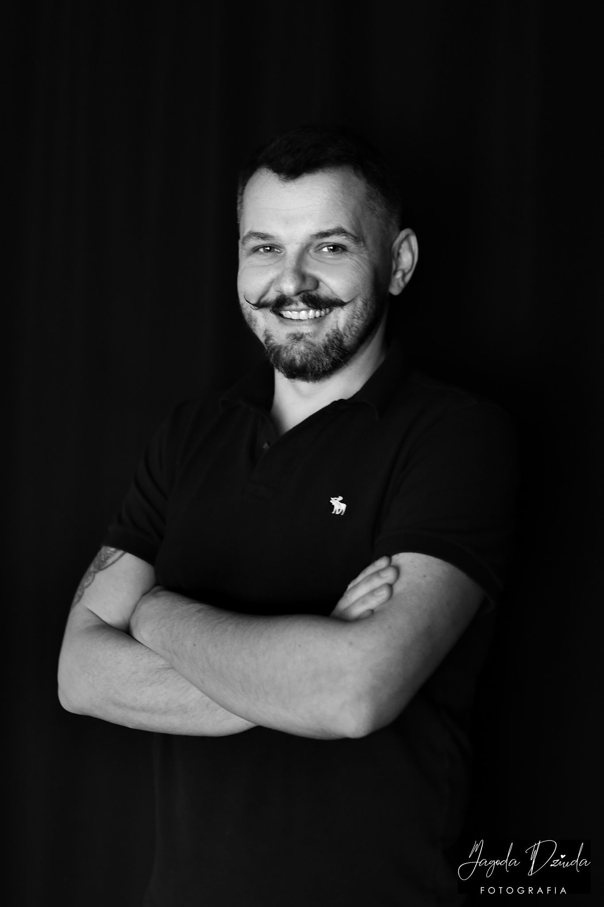

Å velge hvem som skal bygge nettsiden din handler om tillit. Her er hvem jeg er, hvordan jeg jobber, og hvorfor små bedrifter i Norge velger en enkel, tydelig prosess.

Jeg har bodd i Norge i over syv år sammen med min kone og våre tre barn. Vi har bygget livet vårt her – arbeid, skole, nettverk og hverdag. Norge er ikke et midlertidig stopp for oss. Det er hjemmet vårt.
Før jeg begynte med frontend-utvikling, drev jeg i mange år min egen lille bedrift i hjemlandet mitt. Jeg vet hvordan det er å betale fakturaer av egen lomme, å stå ansvarlig for egne beslutninger og å tenke nøye gjennom hver investering.
Når en småbedriftseier vurderer å bruke penger på en nettside, handler det ikke bare om design. Det handler om risiko, prioriteringer og trygghet. Den forståelsen tar jeg med meg inn i hvert prosjekt.
Ingen press. Bare en kort prat for å finne ut hva som faktisk gir verdi for din bedrift.
Du får klare svar – uten teknisk språk.
Jeg forklarer hva vi gjør, hvorfor vi gjør det, og hva du får igjen for investeringen.
Du vet alltid neste steg.
Fast flyt fra plan til levering, slik at prosjektet ikke drar ut eller blir rotete.
Nettsiden skal bygge tillit.
Moderne design, ryddig struktur og god mobilopplevelse – førsteinntrykket teller.
Du står ikke alene.
Jeg hjelper med små justeringer og spørsmål etter lansering, så det blir trygt i drift.
Jeg studerer frontend-utvikling ved Noroff. Frontend er den delen kundene dine ser og bruker: struktur, design, brukervennlighet og ytelse på mobil og PC.
Ryddig oppbygning som gjør det enkelt for kunden å forstå og ta kontakt.
Et uttrykk som passer bedriften din og gir et profesjonelt førsteinntrykk.
Nettsiden fungerer like bra på mobil som på desktop.
Rask, lett og teknisk ryddig – slik at siden føles “premium”.
Budskap og call-to-action som gjør neste steg tydelig for kunden.
Et solid fundament som gjør det lettere å bli funnet i Google.
Send en kort melding om hva du trenger. Jeg svarer med forslag og neste steg – uten forpliktelser.